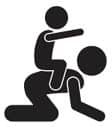

Hey küçük tamirci, çek ellerini arabamdan…
 Neler Bekliyor?
Neler Bekliyor?
Eğer bu satırları okuyorsanız muhtemelen ilk çocuğunuzu bekliyorsunuz ya da yeni annesiniz. Evleneli birkaç yıl olduğunu farz edelim. Aman ne güzel bir eviniz var. Oturma grubunun rengiyle perdelerin uyumuna bayıldım. Berjerin üzerindeki küçücük puantiyeler ile tablodaki desenler birbirini nasıl da tamamlamış. İyi günlerde oturun.
Aaaa o da ne? Yerde mavi, yeşil, kırmızı ve cart pembe renklerden oluşan bir oyun halısı. Sizin caaanım halının üstüne kumaşçıdan mobilyaların renklerine uygun bir kumaş kestirip seriverin de kusmuk olmasın, hadi canım. Hem sizin ufaklık yerde tekerlenirken halıdan bakteri, toz, akar artık neyse, kapmamış olur, hem de sık sık toplayıp yıkamaya gelir, içiniz rahat eder. Şu berjeri azıcık köşeye itin, oraya ufaklığın salıncağı konacak, hani şu kendi kendine sallanan, değişik sesler çıkartan, orasından burasından hayvancıklar fışkıran. O ne be? Kaldır güzelim, o köşedeki servet ödediğin aksesuarları. Çocuk bu çarpar, devirir Allah korusun. Onu kaldır, yerine bi hacıyatmaz oyuncak koy, iyi oluyor tutunuyor, kalkıyor, emeklerken işe yarıyor. Şu büyük parça araba, kamyon, aktivite masası, etkinlik zımbırtısını falan da balkona koy. Koltuğun altında saklanan arabaları, televizyon ünitesinin altına kaçan minik parçaları, çekmecelerden taşan oyuncakları bi kutuya topla diyeceğim ama boş ver. İş işten geçti artık, oyuncaklar evi istila etti. Evinin ilk hali ile son hali arasındaki 7000 farkı kim bulabilir ki?
 Ben ne yaptım?
Ben ne yaptım?
Sunay Akın diyor ki, “Gelişmiş, uygar ülkelerde oyuncaklar çocuklara hayalleri güçlensin diye alınırken, geri kalan ülkelerde oyalansın diye verilir. Oyuncakları çocuklarına hayalleri büyüsün diye alan ülkeler dünya yönetiminde söz sahibi olurlarken, oyuncakların önemini anlayamayan, küçümseyen toplumlar onların kapılarında oyalanmaya mahkumdur.” Bu sözün üzerine ben ne diyebilirim ki daha.
Çok oyuncak aldım evet, evimi ev olmaktan çıkartacak kadar çok belki de. Ellerinin oyuncak tutmaya başladığı anı fark ettiğim gibi almaya başladım. Size hangi oyuncak iyidir, yüzde bilmem ne kadarı plastiktir ve zararlıdır, hangileri elzemdir, hangilerine gerek yoktur’u anlatmayacağım elbette. Burada konuşacağımız asıl konu, o oyuncağı nasıl değerlendirdiğiniz. Çocuktan önüne bir sepet oyuncak koyup kendinden geçercesine saatlerce oynamasını beklerseniz, çok beklersiniz. Artık oyuncaklar o kadar karmaşık ki, nasıl çalıştığını, kocaman beyninizle siz bile çözmekte zorlanıyorsunuz. Önce oyuncağı tanıyın, sonra ona tanıtın ve bir süre birlikte oynayın. Keyif alıyorsanız hiç kalkmayın. Ben bazen kendimi oyuna öylesine kaptırıyorum ki, çocukların sıkılıp gittiğini bile fark etmiyorum.
Oyuncak ambalajlarının üzerinde hangi aya ve yaşa hitap ettiği yazıyor zaten biliyorsunuz. Bazen çok severek aldığım oyuncağa çocukların hiç ilgi göstermediği zamanlar oldu. Birkaç ay sonra oyuncağı tekrar çıkarttığımda delirmiş gibi mutlu oldular.
Bu oyuncak milleti güzel olduğu gibi pahalı da. Ben oyuncak toptancısından alıyorum çoğu zaman. Fiyatlar neredeyse %70 daha ucuz. Çok sık gidemeyeceğim bir yerde olduğu için her gidişimde biraz fazla oyuncak alıyor ve balkonda saklıyorum. Çocuklara ara ara çıkartıp yeni bir oyuncak almış gibi yapıyorum. Oyuncak alma işini çocukların zevklerine bırakmıyorum.
Bir çocuğu oyuncakçıya soktuğunuzda ve seçmesini söylediğinizde ne ödeyeceğinizi ve ne alacağınızı asla tahmin edemezsiniz. Evdeki oyuncağın aynısından üç tane daha alıp gelebilir ve eğer almam ben bunu derseniz kendini yere atabilir. Ben demokratik bir anne değilim. Oyuncakçıda istedikleri kadar kalabilirler. İstedikleri oyuncağı inceleyebilirler. Ama benim istediğim oyuncağı alıp çıkarız. Çok mu kötü göründüm. (Zaten o kadar çok vakit geçirince hepsiyle oynamış kadar oluyorlar. Burada dikkat etmeniz gereken tek nokta: Her hafta aynı oyuncakçıya gitmeyin, eşkalinizi kirletmeyin.)
Mevzu ne aldığınız değil, nasıl oynadığınız. Oyun hamurlarından şekiller yapmaktan bıktılarsa, onlara bir dolap kapağı gösterin, koparttıkları hamurları oraya yapıştırsınlar. Boya yapmaktan bıktılarsa açın bacaklarınızı sizi boyasınlar. Kaliteli oyun için kaliteli oyuncağa ihtiyaç yok ki. Şöyle bir örnek vereyim, bir gün eve büyük boy mukavva kutu götürdüm. Önce içine oturdular ben de kutuya ip geçirdim ve onları gezdirdim, bir çeşit tren gibi düşünün. Sonra kutuları boyadılar. Sonra kutuları üst üste koydular ve sanki çok katlı bir otopark gibi oldu. Arabalarını oraya dizdiler, ben de otopark görevlisi oldum ve her yeni araba için fiş kestim. Eeee araba dizilebiliyorsa orası bir ev de olabilir. Sonra oyuncak bebekleri getirip kutuları bebek evi yaptılar. İçinde bebekler yaşayabiliyorsa o kutuda bir kedi de yaşayabilir mi? Eveeeetttt. Kim kedi olmak ister? Ve akşamın sonunda kutuların içinde miyavlarken uyuyakaldılar.
 Püf Noktaları
Püf Noktaları
- Aldığın oyuncaklar yaşlarına uygun olsun.
- Küçük parçalardan oluşmamasına ve parçalanabilir olmamasına dikkat et. Ağzına atmıyor olabilir tamam, ama çok parçalı oyuncakların parçaları kaybolduğunda fonksiyonlarını yitiriyorlar.
- Oyuncakları sakla, bir zaman sonra tekrar çıkartırsın.
- Ortada çok fazla oyuncak bırakma, neyle oynayacaklarını şaşırıyorlar. Adet az olunca kafaları daha az karışıyor.
- Artık oynamadıkları oyuncakları dönem dönem ayıklayıp kaldır. Bir sonraki çocuk için saklanabilir ya da ihtiyacı olanlara verilebilir.
- Çamaşır makinesinde yıkanabilir olanları zaman zaman yıkamak iyi fikir. Plastik ve pilsiz olanları küvete dolduracağın suyun içine çocuklarla birlikte atmak ve yıkamalarını söylemek de bir yöntem.
- Kendine çeşitli uçlarda bir tornavida seti al. Yok yok oyuncak değil, gerçek. Oyuncakların pillerini takıp çıkartmak için epey bir ihtiyacın olacak. Ve nasıl pil tükettiğinize asla inanamayacaksın.
 Sıkıcı Tarafı
Sıkıcı Tarafı
Tek tek geliyor, masum masum yaklaşıyor, çok çabuk ürüyor ve hızla tavşanlar, arabalar, pelüşler, bebekler, bul-tak kovalar vs. diye gruplaşıyor ve evi istila ediyorlar.
 Eğlenceli Yanı
Eğlenceli Yanı
Araba tamircisi olmak, oğlumun muayene ettiği bir hasta olmak, yerlerde sürünmek, olmayan balıkları olmayan denizden tutmak, damacanalardan davul yapmak, oyun hamurlarından hiçbir şeye benzetemediğim şekiller yapmak ama çocuklarım, aaa inek oldu, aaa köpek oldu, dediklerinde kendi yaptığım şekillere boş boş bakmak çok eğlenceli.